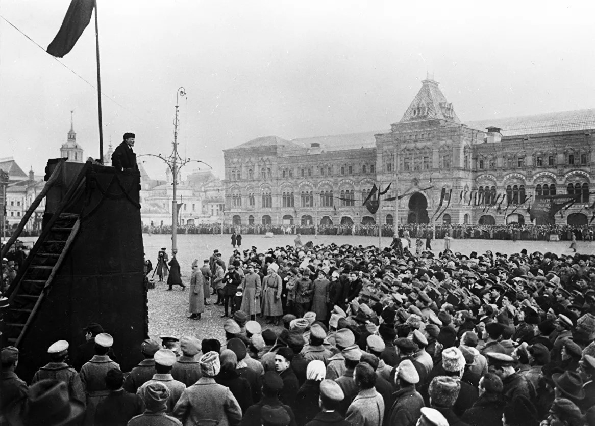
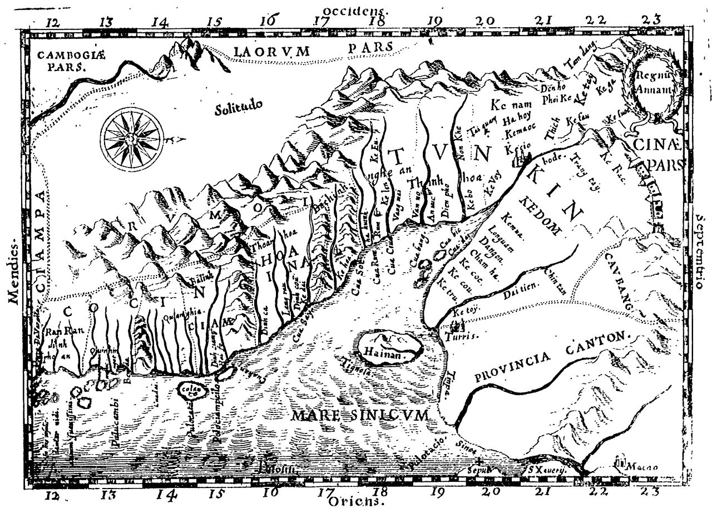
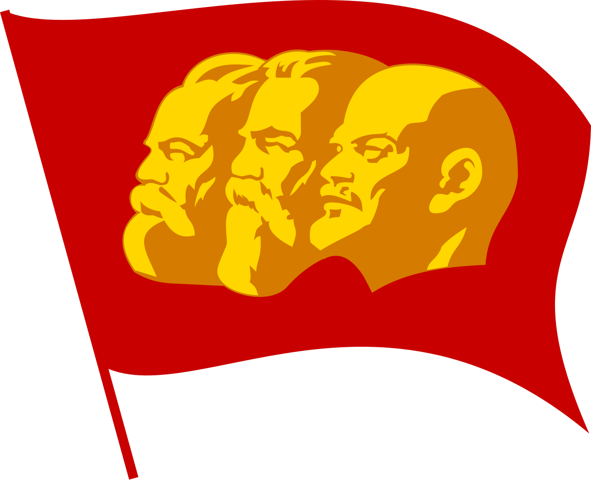

1930
Lịch sử Đảng Cộng sản Việt Nam
Cương lĩnh
chính trị
& Luận cương
So sánh hai văn kiện chính trị đặt nền móng cho cách mạng Việt Nam
Lớp thuyết trình
CLC-QTL49A

Nguồn ảnhPinterest
Phần I · Mở đầu
Đặt vấn đề
Bối cảnh lịch sử
- Năm 1930 là cột mốc đặc biệt: Đảng Cộng sản Việt Nam ra đời.
- Liên tiếp thông qua hai văn kiện chính trị cốt lõi định hình đường lối cách mạng.
Hai văn kiện trọng đại
- Cương lĩnh chính trị đầu tiên (02/1930) gồm Chánh cương vắn tắt & Sách lược vắn tắt.
- Luận cương chính trị (10/1930) do đồng chí Trần Phú khởi thảo.
Vì sao quan trọng
So sánh giúp hiểu rõ quá trình hình thành và hoàn thiện đường lối cách mạng của Đảng.

Nguyễn Ái Quốc · tại Liên Xô · năm 1923
Phần I · Mở đầu
Bối cảnh Việt Nam năm 1930
Tác động quốc tế
- Khủng hoảng kinh tế thế giới 1929 → 1933 khiến sản xuất đình đốn.
- Liên Xô đạt thành tựu rực rỡ; phong trào cách mạng dâng cao.
Nguyễn Ái Quốc tại Liên Xô · 1923, tiếp xúc với Quốc tế Cộng sản

Liên Xô · thành tựu cách mạng

Nông dân Đông Dương

Cảnh sát Pháp tại Hà Nội
Tình hình trong nước
- Pháp tăng cường bóc lột thuộc địa để bù đắp thiệt hại chính quốc.

Bản đồ Đông Dương thuộc Pháp · cuối thế kỷ XIX, đầu XX
Kết quả
Mâu thuẫn giữa toàn thể dân tộc Việt Nam với đế quốc Pháp và tay sai trở nên gay gắt hơn bao giờ hết.
Phần I · Mở đầu · Tầm quan trọng của bối cảnh
Yêu cầu của lịch sử
Khủng hoảng đường lối cứu nước
- Khuynh hướng phong kiến (Cần Vương) thất bại, không còn phù hợp thời đại.
- Khuynh hướng dân chủ tư sản (Đông Du, Duy Tân, Yên Bái) lần lượt sụp đổ.
- Phong trào yêu nước thiếu đường lối khoa học & lực lượng lãnh đạo thống nhất.
Yêu cầu của thời đại
- Giai cấp công nhân Việt Nam phát triển nhanh, đòi hỏi đảng tiên phong.
- Chủ nghĩa Mác Lênin đã được Nguyễn Ái Quốc truyền bá vào trong nước.
- Cách mạng Tháng Mười Nga (1917) thắng lợi mở đường cho cách mạng vô sản thế giới.
Tất yếu lịch sử
- Sự ra đời của Đảng Cộng sản Việt Nam là quy luật tất yếu của lịch sử dân tộc.

Hội nghị thành lập Đảng · 3 → 7/2/1930 tại Hương Cảng
Bước ngoặt
Bối cảnh đặt ra yêu cầu cấp bách về một đường lối cách mạng đúng đắn, Cương lĩnh chính trị 02/1930 ra đời chính là câu trả lời lịch sử cho yêu cầu đó.
Cương lĩnh 02/1930 · Hoàn cảnh
Hoàn cảnh lịch sử
01
Xã hội thuộc địa nửa phong kiếnPháp khai thác thuộc địa lần II biến đổi cơ cấu kinh tế & giai cấp; tồn tại hai mâu thuẫn: dân tộc & giai cấp.
02
Khủng hoảng đường lốiPhong trào yêu nước liên tục thất bại vì thiếu đường lối phù hợp.
03
Tìm đường cứu nướcNăm 1911, Nguyễn Ái Quốc ra đi, tìm thấy con đường cách mạng vô sản.
04
Chuẩn bị tổ chứcNăm 1924 NÁQ về Quảng Châu; 6/1925 sáng lập Hội Việt Nam Cách mạng Thanh niên.
05
Ba tổ chức phân liệtNăm 1929, ba tổ chức cộng sản hoạt động riêng rẽ, tranh giành ảnh hưởng.
06
Hội nghị hợp nhất6/1 → 7/2/1930 tại Hương Cảng, hợp nhất thành Đảng Cộng sản Việt Nam; thông qua Chánh cương & Sách lược vắn tắt do NAQ soạn thảo — Cương lĩnh đầu tiên.

Bến Nhà Rồng · Sài Gòn · 5/6/1911, nơi Nguyễn Tất Thành ra đi tìm đường cứu nước
Cương lĩnh 02/1930 · Nội dung
Nội dung chủ yếu

Đồng chí Nguyễn Ái Quốc · tại Pháp, đầu thập niên 1920 · người khởi thảo Cương lĩnh
Cương lĩnh 02/1930 · Ý nghĩa
Ý nghĩa lịch sử
Lý luận
- Vận dụng đúng đắn, sáng tạo chủ nghĩa Mác Lênin vào một nước thuộc địa nửa phong kiến.
Đường lối
- Kết hợp đúng đắn vấn đề dân tộc & giai cấp, lấy độc lập tự do làm cốt lõi.
Bước ngoặt
- Chấm dứt thời kỳ khủng hoảng đường lối và giai cấp lãnh đạo.
"Việc thành lập Đảng là một bước ngoặt vô cùng quan trọng trong lịch sử cách mạng Việt Nam ta."
Chủ tịch Hồ Chí Minh
Mác · Engels · Lênin · nền tảng lý luận của Đảng Cộng sản

Hồ Chí Minh (Tống Văn Sơ) · ảnh tại Nhà tù Victoria, Hồng Kông · năm 1930
Luận cương 10/1930 · Ý nghĩa
Ý nghĩa lịch sử
Đường lối
- Khẳng định con đường "tư sản dân quyền cách mạng" tiến lên CNXH, bỏ qua TBCN.
Lãnh đạo
- Đảng Cộng sản là nhân tố quyết định thắng lợi, lấy Mác Lênin làm nền tảng tư tưởng.
Phương pháp
- Phát triển lý luận bạo lực cách mạng & khởi nghĩa vũ trang; gắn cách mạng VN với cách mạng thế giới.
"Không chú ý đến những nhu yếu và sự tranh đấu hằng ngày của quần chúng là rất sai lầm. Mà chỉ chú ý đến những nhu yếu hằng ngày mà không chú ý đến mục đích lớn của Đảng cũng là rất sai lầm."
Luận cương chính trị 10/1930 · kết hợp mục tiêu trước mắt với mục tiêu lâu dài
Đóng góp
Góp phần củng cố phong trào cách mạng 1930–1931: xây dựng tổ chức Đảng, phát triển liên minh công – nông, chuẩn bị lực lượng.

Đồng chí Trần Phú (1904 → 1931) · Tổng Bí thư đầu tiên, người khởi thảo Luận cương
So sánh · Điểm giống nhau
Năm điểm tương đồng
Tại Hội nghị thành lập Đảng (3 → 7/2/1930) ở Hương Cảng, các đại biểu thông qua Chánh cương, Sách lược & Chương trình vắn tắt do Nguyễn Ái Quốc soạn thảo. Tháng 10/1930, Hội nghị TW I thông qua Luận cương chính trị do đồng chí Trần Phú soạn thảo.
01
Cùng nền tảng lý luậnĐều xây dựng trên chủ nghĩa Mác Lênin và lập trường cách mạng vô sản.
02
Phương hướng chiến lượcCùng xác định cách mạng Việt Nam làm tư sản dân quyền cách mạng.
03
Nhiệm vụ cách mạngĐánh đổ đế quốc và phong kiến.
04
Phương pháp cách mạngDùng sức mạnh bạo lực cách mạng của quần chúng.
05
Quan hệ quốc tếLiên kết chặt chẽ và là một bộ phận của cách mạng vô sản thế giới.
Hội nghị thành lập Đảng · 3 → 7/2/1930 tại Hương Cảng (Hồng Kông)
So sánh · Nguyên nhân
Nguyên nhân của sự khác biệt
Nguyễn Ái Quốc
Trần Phú
Chủ quan · Người soạn thảo
- Nguyễn Ái Quốc khảo sát phong trào nhiều thuộc địa, tư duy thực tiễn sâu sắc, xuất phát từ điều kiện cụ thể thay vì áp dụng máy móc, ưu tiên dân tộc.
- Trần Phú trưởng thành chủ yếu trong môi trường đào tạo lý luận cách mạng của Quốc tế Cộng sản.
Khách quan · Quốc tế Cộng sản
- Phong trào cộng sản quốc tế chịu ảnh hưởng khuynh hướng "tả khuynh".
- Cách mạng Việt Nam bị nhìn theo khuôn mẫu chung, chưa phản ánh đầy đủ thực tế.

Tổng kết
Quốc tế Cộng sản vừa góp phần truyền bá chủ nghĩa Mác Lênin vào Việt Nam, vừa đặt ra hạn chế trong vận dụng lý luận vào thực tiễn thuộc địa.
Phần V · Giá trị lịch sử · Hạn chế
Hạn chế của Luận cương 10/1930
Luận cương 10/1930 · Hạn chế
- Nặng về đấu tranh giai cấp, chưa đặt đúng mức vấn đề dân tộc.
- Chưa chú trọng tập hợp mọi lực lượng yêu nước.
- Một số nội dung còn máy móc, giáo điều do ảnh hưởng của Quốc tế Cộng sản.
Đánh giá
Hạn chế mang tính lịch sử cụ thể, phản ánh trình độ lý luận & điều kiện thực tiễn của Đảng giai đoạn vừa thành lập — về sau được khắc phục qua các Hội nghị TW (1936, 1939, 1941).
Đ/c Trần Phú · Tổng Bí thư đầu tiên, khởi thảo Luận cương 10/1930

Đảng kỳ ĐCSVN · tiếp nối & khắc phục
Phần V · Liên hệ thực tế hiện nay
Liên hệ từ Cương lĩnh 02/1930
01
Kiên định mục tiêuĐộc lập dân tộc gắn liền CNXH, sợi chỉ đỏ xuyên suốt.
02
Xây dựng, chỉnh đốn ĐảngGiữ vai trò lãnh đạo; chống suy thoái, "tự diễn biến", "tự chuyển hóa".
03
Đại đoàn kết toàn dânHuy động mọi nguồn lực trong & ngoài nước, tăng đồng thuận xã hội.
04
Đối ngoạiĐộc lập, tự chủ, đa phương hóa, hội nhập sâu rộng, "ngoại giao cây tre".
05
Phát triển xã hội"Dân giàu, nước mạnh, dân chủ, công bằng, văn minh"; không để ai bị bỏ lại.
Quốc huy nước CHXHCN Việt Nam · biểu tượng độc lập dân tộc gắn liền CNXH

Tư tưởng Hồ Chí Minh · nền tảng đường lối của Đảng
Phần V · Liên hệ thực tế hiện nay
Liên hệ từ Luận cương 10/1930
01
Đảng trong sạch, vững mạnhTiếp tục xây dựng Đảng, củng cố kỷ luật & gắn bó quần chúng.
02
Đổi mới sáng tạoVận dụng sáng tạo lý luận, phát triển kinh tế thị trường định hướng XHCN.
03
Sức mạnh dân tộc & thời đạiĐẩy mạnh hội nhập quốc tế, bảo vệ lợi ích quốc gia, dân tộc.
04
Lấy dân làm trung tâmChăm lo đời sống nhân dân, đặt người dân làm trung tâm mọi chính sách phát triển.
05
Bảo vệ Tổ quốcHiện thực hóa con đường tiến lên CNXH, bảo vệ vững chắc Tổ quốc trong tình hình mới.
Đảng kỳ ĐCSVN · vai trò lãnh đạo duy nhất, lấy Mác-Lênin làm nền tảng
Mác · Engels · Lênin · nền tảng tư tưởng của Đảng

Cảm ơn thầy và các bạn
Nhóm rất mong nhận được câu hỏi và góp ý · Lớp CLC-QTL49A